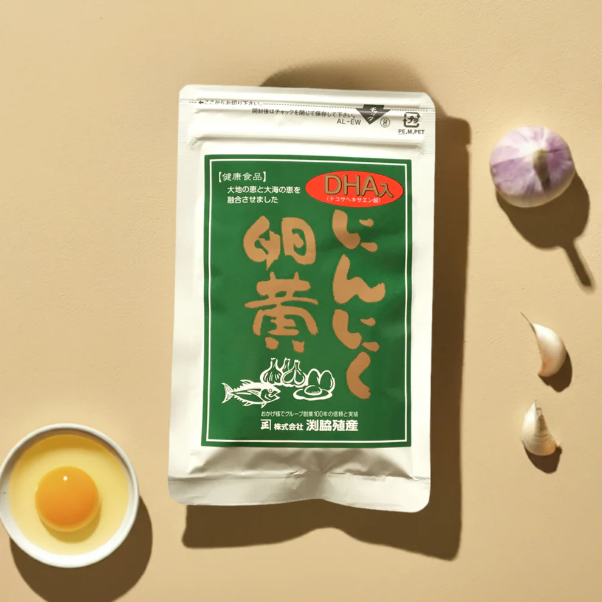

にんにく卵黄
販売開始から約30年。ずっと愛されているロングセラー商品。地元鹿児島の伝統的な滋養食「にんにく卵黄」にDHAを配合し、頭にも身体にも働きかけ、毎日の元気をサポートしてくれます。今回、そんな「DHA入り にんにく卵黄」に鉄分や乳酸菌を更に配合しバージョンアップ。家族を守り、家族みんなに必要とされる商品です。
特長
-
疲労回復といえば連想される「にんにく」青森県産のにんにくを熟成させ「黒にんにく」にした物を材料に使っています。不飽和脂肪酸であるドコサヘキサエン酸DHAを配合。DHAは人間の体内では生成する事が出来ない。日本人は魚を多く食べていたが、近年はあまり食べなくなってきたため、サプリメント等で補充するのが有効。
原材料
ＤＨＡ含有精製魚油（国内製造）、サフラワー油、醗酵黒ニンニクパウダー、卵黄末、有胞子性乳酸菌、亜鉛含有酵母／ゼラチン、グリセリン、ミツロウ、ピロリン酸第二鉄、酸化防止剤（Ｖ．Ｅ）、ビタミンＢ１２、（一部に卵・ゼラチンを含む）
Q&A
- いつ摂るのがおすすめですか？
- 朝、出かける前 もしくは就寝前の服用をおススメしています。
- においが気になりませんか？
- ソフトカプセルで包むことで口臭や体臭につながりにくい仕上がりです。
栄養成分表示（3粒あたり）
| エネルギー | kcal |
|---|---|
| たんぱく質 | g |
| 脂質 | g |
| 炭水化物 | g |
| 食塩相当量 | g |